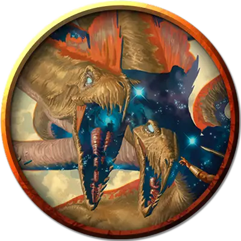

Поликран
Polukranos
Громадный Монстр, без мировоззрения, именной НИП

Класс Доспеха 17 (природный доспех)
Хиты 232 (15к20 + 75)
Скорость 50 футов, плавая 50 футов
| мод | спас | ||
|---|---|---|---|
| СИЛ | 25 | +7 | +7 |
| ЛОВ | 15 | +2 | +2 |
| ТЕЛ | 21 | +5 | +5 |
| мод | спас | ||
|---|---|---|---|
| ИНТ | 4 | −3 | −3 |
| МДР | 14 | +2 | +2 |
| ХАР | 10 | +0 | +0 |
Навыки Восприятие +14
Иммунитет к урону кислота
Чувства тёмное зрение 120 футов, пассивное Восприятие 24
Опасность 19 (22000 опыта)
Бонус мастерства +6
Особенности
Кислотная кровь. Когда поликран получает колющий или рубящий урон, каждое существо в пределах 5 футов от гидры получает 10 (3к6) урона кислотой.
Задержка дыхания. Поликран может задержать дыхание на 1 час.
Легендарное сопротивление (3/день). Если поликран проваливает спасбросок, он может вместо этого сделать спасбросок успешным.
Многочисленные головы. У поликрана пять голов. Пока у поликрана больше одной головы, она совершает с преимуществом спасброски от испуга, глухоты, лишения сознания, ослепления, очарования и ошеломления. Если поликран за один ход получает урон 40 или больше, одна из его голов умирает. Если умрут все головы, умирает и поликран. В конце своего хода он отращивает по две головы за каждую умершую голову с конца её предыдущего хода, если только он не получил 40 или более урона огнём в этот период. За каждую отращенную голову поликран восстанавливает по 20 хитов.
Реагирующие головы. За каждую голову после первой поликран получает дополнительную реакцию, которую можно использовать только для совершения провоцированных атак.
Неусыпный. Пока поликран спит, как минимум одна её голова бодрствует.
Действия
Мультиатака. Поликран совершает столько атак укусом, сколько голов у неё есть.
Укус. . Рукопашная атака оружием: +13 к попаданию, досягаемость 15 футов, одна цель. Попадание: 18 (2к10 + 7) колющего урона.
Топтание. . Рукопашная атака оружием: +13 к попаданию, досягаемость 15 футов, одна цель. Попадание: 16 (2к8 + 7) дробящего урона.
Хвост. . Рукопашная атака оружием: +13 к попаданию, досягаемость 15 футов, одна цель. Попадание: 18 (2к10 + 7) дробящего урона. Если целью является существо, оно должно преуспеть в спасброске Силы Сл 21, иначе будет отброшено на расстояние до 20 футов от Поликрана.
Легендарные действия
Поликран может совершать 3 легендарных действия, выбирая из указанных ниже вариантов. Лишь одно легендарное действие может быть совершено за раз, и только в конце хода другого существа. Поликран восстанавливает истраченные действия в начале своего хода.
Обнаружение. Поликран совершает проверку Мудрости (Восприятие).
Взмах хвостом. Поликран совершает атаку Хвостом.
Растаптывающая атака (стоит 3 действия). Поликран перемещается на расстояние до 50 футов по прямой и может перемещаться в пространстве любого существа, Огромного размера или меньше. В первый раз, когда он входит в пространство каждого существа во время этого перемещения, он может нанести атаку Топотом по этому существу.
Описание
Поликран, называемый Пожирателем Миров, является смертным воплощением вечного идеала гидры. В своем первом воплощении он попал из Нюкты в мир смертных, а его размеры и сила были настолько велики, что боги Нилея и Гелиод объединили свои силу, чтобы связать монстра глубоко в Нессийском лесу. Это воплощение было убито, но вечный идеал остался. Новое воплощение Пожирателя Миров - страшное предзнаменование, поскольку монстр появляется только тогда, когда столпы мира дрожат и в царстве богов творятся ужасные вещи. Его буйства часто предвещают эпоху угрозы для всей цивилизации.
Гидры
Что кракены для моря и драконы для неба, то гидры для земель Тероса. Различные гидры обитают на окраинах цивилизации, от обитающих в болотах гидр, известных по всей мультивселенной, до массивных железнокожих гидр, которые скрываются в диких местах. Но даже за их пределами существуют змеевидные ужасы, порождённые прихотями злых богов, такие как легендарная гидра Поликран.
Территориальные страхи. В первые годы своего существования гидры подпитывают свой быстрый рост, терроризируя землю. Когда они вырастают достаточно большими, они ищут территорию, на которую могли бы претендовать как на свою собственную. Часто они похищают логова у других монстров в длительных, разрушительных битвах.
Порочный рост. Вскоре после того, как гидра захватывает территорию, она обычно зарывается в землю, впадая в спячку, в течение которого продолжает расти. Когда она просыпается, то начинает буйствовать, питаясь, так что цикл начинается снова. Эти ритмы разрушения иногда настолько укореняются в умах и знаниях людей, что даже после поражения гидры зверь может вновь появиться как нюкторождённый и начать свою историю заново.